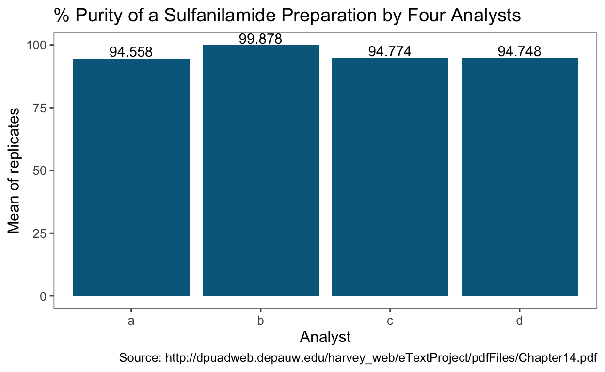
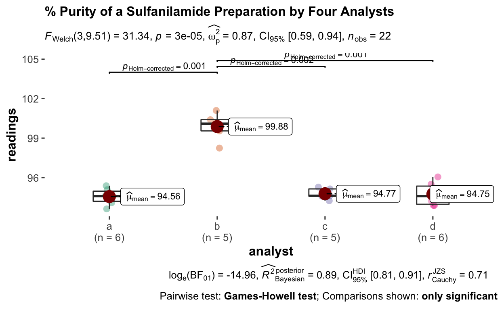
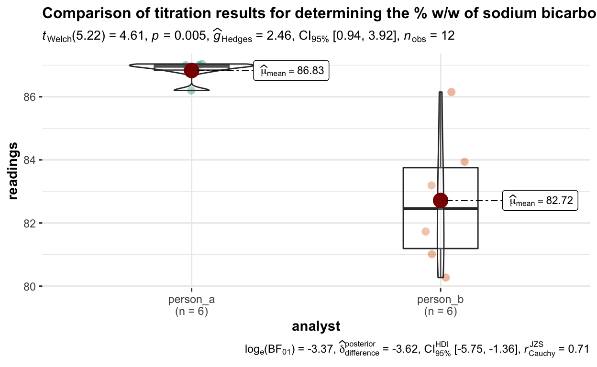
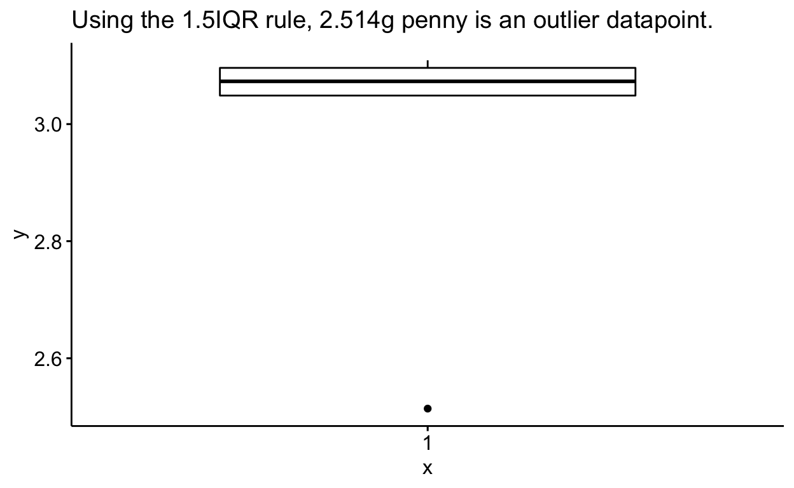

Using Statistical Tests in Analytical Chemistry
I was looking at the titration results for our existing titration method today. Our Quality colleagues wanted to minimise variability in lab measurements for a certain analyte, and there was a newly developed method with improved sample preparation steps developed by the lab in another site. We decided to carry out a study locally to check on the variability for the existing method, and also to compare with the improved method.
My two interns gave me a series of 5-6 readings done by each of them, and in total I was looking at 11 readings. Some questions I had were:
How am I to find out the answers in a statistically sound manner?
As I can’t put the company data up online, let me use the various worked examples I found on: http://dpuadweb.depauw.edu/harvey_web/eTextProject/pdfFiles/Chapter14.pdf.
All data were sourced from the link above.
The data below shows the determination of the percentage purity of a sulfanilamide preparation by four analysts:
a <- c(94.09, 94.64, 95.08, 94.54, 95.38, 93.62)
b <- c(99.55, 98.24, 101.1, 100.4, 100.1, NA)
c <- c(95.14, 94.62, 95.28, 94.59, 94.24, NA)
d <- c(93.88, 94.23, 96.05, 93.89, 94.95, 95.49)
results <- cbind(a,b,c,d) %>%
as_tibble()
glimpse(results)
Rows: 6
Columns: 4
$ a <dbl> 94.09, 94.64, 95.08, 94.54, 95.38, 93.62
$ b <dbl> 99.55, 98.24, 101.10, 100.40, 100.10, NA
$ c <dbl> 95.14, 94.62, 95.28, 94.59, 94.24, NA
$ d <dbl> 93.88, 94.23, 96.05, 93.89, 94.95, 95.49Let’s reshape the data:
reshaped_data <- results %>%
pivot_longer(everything(),
names_to = "analyst",
values_to = "readings") %>%
mutate(analyst = factor(analyst)) # factor instead of character
glimpse(reshaped_data)
Rows: 24
Columns: 2
$ analyst <fct> a, b, c, d, a, b, c, d, a, b, c, d, a, b, c, d, a, …
$ readings <dbl> 94.09, 99.55, 95.14, 93.88, 94.64, 98.24, 94.62, 94…Let’s look at the mean and standard deviation for results for each analyst:
reshaped_data %>%
group_by(analyst) %>%
summarise(mean = round(mean(readings, na.rm = T), 3),
sd = round(sd(readings, na.rm = T), 3)) # na.rm for working with missing data
# A tibble: 4 x 3
analyst mean sd
<fct> <dbl> <dbl>
1 a 94.6 0.641
2 b 99.9 1.07
3 c 94.8 0.428
4 d 94.7 0.899reshaped_data %>%
group_by(analyst) %>%
summarise(mean = round(mean(readings, na.rm = T), 3)) %>%
ggplot(aes(x = analyst, y = mean, label = mean)) +
geom_col(fill = "deepskyblue4") +
geom_text(vjust = -0.2) +
labs(title = "% Purity of a Sulfanilamide Preparation by Four Analysts",
x = "Analyst",
y = "Mean of replicates",
caption = "Source: http://dpuadweb.depauw.edu/harvey_web/eTextProject/pdfFiles/Chapter14.pdf") +
ggthemes::theme_few()

Let’s test if the results differ among the analysts:
glimpse(reshaped_data)
Rows: 24
Columns: 2
$ analyst <fct> a, b, c, d, a, b, c, d, a, b, c, d, a, b, c, d, a, …
$ readings <dbl> 94.09, 99.55, 95.14, 93.88, 94.64, 98.24, 94.62, 94… Df Sum Sq Mean Sq F value Pr(>F)
analyst 3 104.20 34.73 54.66 3.05e-09 ***
Residuals 18 11.44 0.64
---
Signif. codes: 0 '***' 0.001 '**' 0.01 '*' 0.05 '.' 0.1 ' ' 1
2 observations deleted due to missingnessFrom the p value of 3.05 x 10^-9, there is a significant difference between the mean values for the analysts. To find out which pair is statistically different, we use the Tukey’s Honest Significant Difference method.
TukeyHSD(m1, which = "analyst", ordered = F)
Tukey multiple comparisons of means
95% family-wise confidence level
Fit: aov(formula = readings ~ analyst, data = reshaped_data)
$analyst
diff lwr upr p adj
b-a 5.31966667 3.955487 6.683846 0.0000000
c-a 0.21566667 -1.148513 1.579846 0.9693980
d-a 0.19000000 -1.110694 1.490694 0.9755572
c-b -5.10400000 -6.528839 -3.679161 0.0000000
d-b -5.12966667 -6.493846 -3.765487 0.0000000
d-c -0.02566667 -1.389846 1.338513 0.9999438Let’s show the results in a visual manner:
The plot above shows that the readings for Analyst B is significantly higher than the other analysts.
I learnt that there is a package in R that can carry out modelling and visualization in 1 step, which is the ggstatsplot package.
ggbetweenstats(
data = reshaped_data,
x = analyst,
y = readings,
plot.type = "box",
type = "p", # parametric, non-parametric, robust or bayes
title = "% Purity of a Sulfanilamide Preparation by Four Analysts",
ggtheme = theme_few()
)

Different statistical tests were used for this package (Games-Howell instead of Tukey HSD). Games-Howell assumes uneven variance for the data. The plot above also shows the individual data points, which is a good practice.
What if I wanted to compare the results of two analysts? In that case, t-test should be used in place of ANOVA.
titration_data <- tribble(
~person_a, ~person_b,
86.82, 81.01,
87.04, 86.15,
86.93, 81.73,
87.01, 83.19,
86.20, 80.27,
87.00, 83.94
)
titration_data
# A tibble: 6 x 2
person_a person_b
<dbl> <dbl>
1 86.8 81.0
2 87.0 86.2
3 86.9 81.7
4 87.0 83.2
5 86.2 80.3
6 87 83.9# reshape the data
titration_reshaped <- titration_data %>%
pivot_longer(cols = everything(),
names_to = "analyst",
values_to = "readings") %>%
mutate(analyst = factor(analyst))
titration_reshaped
# A tibble: 12 x 2
analyst readings
<fct> <dbl>
1 person_a 86.8
2 person_b 81.0
3 person_a 87.0
4 person_b 86.2
5 person_a 86.9
6 person_b 81.7
7 person_a 87.0
8 person_b 83.2
9 person_a 86.2
10 person_b 80.3
11 person_a 87
12 person_b 83.9# A tibble: 2 x 3
analyst mean sd
<fct> <dbl> <dbl>
1 person_a 86.8 0.320
2 person_b 82.7 2.16 # to compare the means of results by the two analysts:
t.test(readings ~ analyst, data = titration_reshaped)
Welch Two Sample t-test
data: readings by analyst
t = 4.6147, df = 5.219, p-value = 0.005177
alternative hypothesis: true difference in means is not equal to 0
95 percent confidence interval:
1.852919 6.383748
sample estimates:
mean in group person_a mean in group person_b
86.83333 82.71500 The mean titration readings obtained by Person B is significantly higher than that of Person A.
ggbetweenstats(
data = titration_reshaped,
x = analyst,
y = readings,
title = "Comparison of titration results for determining the % w/w of sodium bicarbonate in soda ash."
)

What if I want to compare the variance? This is useful if I want to check if method B reduces the variability of the measure.
# Load data that compares the mass of a coin
mtd_a <- c(3.080, 3.094, 3.107, 3.056, 3.112, 3.174, 3.198)
mtd_b <- c(3.052, 3.141, 3.083, 3.083, 3.048, NA, NA)
coin_data <- cbind(mtd_a, mtd_b) %>%
as_tibble() %>%
pivot_longer(cols = everything(),
names_to = "method",
values_to = "mass_g")
glimpse(coin_data)
Rows: 14
Columns: 2
$ method <chr> "mtd_a", "mtd_b", "mtd_a", "mtd_b", "mtd_a", "mtd_b",…
$ mass_g <dbl> 3.080, 3.052, 3.094, 3.141, 3.107, 3.083, 3.056, 3.08…# computing the mean, standard deviation and variance:
coin_data %>%
group_by(method) %>%
summarise(mean = mean(mass_g, na.rm = T),
sd = sd(mass_g, na.rm = T),
var = var(mass_g, na.rm = T))
# A tibble: 2 x 4
method mean sd var
<chr> <dbl> <dbl> <dbl>
1 mtd_a 3.12 0.0509 0.00259
2 mtd_b 3.08 0.0372 0.00138# use F-test to compare the variance (assuming normal distribution)
var.test(mass_g ~ method, data = coin_data, alternative = "two.sided")
F test to compare two variances
data: mass_g by method
F = 1.8726, num df = 6, denom df = 4, p-value = 0.5661
alternative hypothesis: true ratio of variances is not equal to 1
95 percent confidence interval:
0.2036028 11.6609726
sample estimates:
ratio of variances
1.872598 shapiro.test(coin_data$mass_g) # p>0.05
Shapiro-Wilk normality test
data: coin_data$mass_g
W = 0.90871, p-value = 0.2054bartlett.test(mass_g ~ method, data = coin_data) # for more than two groups
Bartlett test of homogeneity of variances
data: mass_g by method
Bartlett's K-squared = 0.4039, df = 1, p-value = 0.5251# if distribution is not normally distributed, the Levene test may be used:
car::leveneTest(mass_g ~ method, data = coin_data) # same as above
Levene's Test for Homogeneity of Variance (center = median)
Df F value Pr(>F)
group 1 0.4028 0.5399
10 At 95% confidence interval, there is no evidence to suggest that there is a difference in precision between the two methods.
This example is also from the same chapter cited below, in the Reference section.
A sample is known to have 98.76% sodium bicarbonate. Five replicate measurements were taken, and we want to find out if the analysis is giving inaccurate results.
[1] 98.588sd(bicarb)
[1] 0.09731393# visualize
shapiro.test(bicarb) # follows normal distribution
Shapiro-Wilk normality test
data: bicarb
W = 0.94407, p-value = 0.6949ggqqplot(bicarb) # Q-Q plot
# boxplot
ggboxplot(bicarb,
ylab = "readings")
t.test(bicarb, mu = 98.76, alternative = "two.sided")
One Sample t-test
data: bicarb
t = -3.9522, df = 4, p-value = 0.01679
alternative hypothesis: true mean is not equal to 98.76
95 percent confidence interval:
98.46717 98.70883
sample estimates:
mean of x
98.588 The data suggests that the experimental data is significantly different from the known value, and that there is indeed a source of error when conducting the experiments.
When there are data-points that appear not to be consistent with the other data points, how do you determine if it is an outlier?
One way is by visualizing using the box-plot, and an outlier is defined as a point outside of the inter-quartile range (1.5 x IQR).
There are some significance tests that can be used to identify outliers, which include the Dixon’s Q-Test (not recommended by ISO), the Grubb’s Test (can be carried out using the outliers package) and the Chauvenet’s Criterion. I haven’t found a package which I can check for outliers using Chauvenet’s Criterion, and will only use the Grubb’s test below.
The Grubbs test is a test used to detect outliers (assuming normally distributed data).
Using penny weight dataset shown below, it is of interest to test if a penny with a mass of 2.514g is an outlier datapoint.
pennies <- c(3.067, 3.049, 2.514, 3.048, 3.079, 3.094, 3.109, 3.102)
# Boxplot
shapiro.test(pennies) # not normally distributed (p<0.05), use grubb's test with caveat
Shapiro-Wilk normality test
data: pennies
W = 0.52689, p-value = 2.172e-05# Grubbs test
grubbs.test(pennies, type = 10, two.sided = T)
Grubbs test for one outlier
data: pennies
G = 2.45880, U = 0.01295, p-value = 5.456e-06
alternative hypothesis: lowest value 2.514 is an outlierThe null hypothesis is that there is no outlier, and the alternative hypothesis is that there is an outlier. In this case, as p<0.05, 2.514 is indeed an outlier datapoint.
Let us check again using a box-plot visualization:
ggboxplot(pennies) +
labs(title = "Using the 1.5IQR rule, 2.514g penny is an outlier datapoint.")

All my questions I had at the beginning were answered in statistically sound manner. I got to revise the t-test, ANOVA, learnt how to carry out modelling and visualization in one step. I also deepened my analytical chemistry results interpretation by knowing whether to compare the mean or to comare the variance when assessing usability of newly developed methods.
I learnt a new way to detect for outliers, which is the Grubb’s test. However, I am on the lookout for ways to test for outlier using the Chauvenet’s Criterion.
http://dpuadweb.depauw.edu/harvey_web/eTextProject/pdfFiles/Chapter14.pdf
http://www.sthda.com/english/wiki/one-sample-t-test-in-r
http://www.sthda.com/english/wiki/f-test-compare-two-variances-in-r